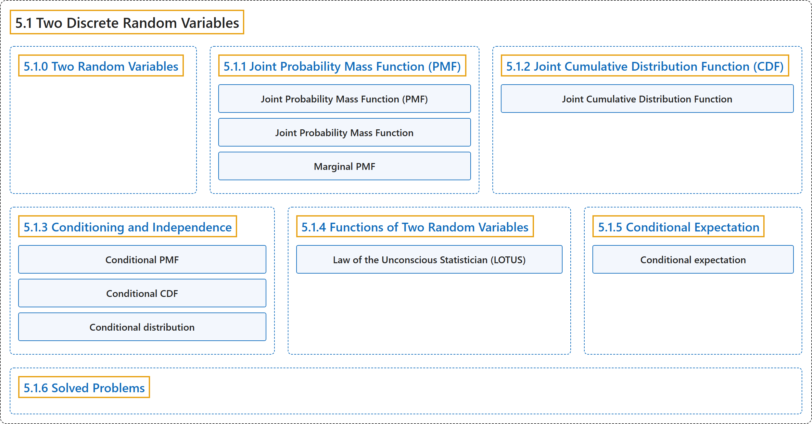

5.1 Two Discrete Random Variables
Classification

Glossary
| Term | Definition | 中文翻译 | Source |
|---|---|---|---|
| 5.1 Two Discrete Random Variables 两个离散随机变量 |
(No definition) | （无定义） | Pishro-Nik, 2014, section 5.1 |
| 5.1.0 Two Random Variables 两个随机变量 |
(No definition) | （无定义） | Pishro-Nik, 2014, section 5.1.0 |
| 5.1.1 Joint Probability Mass Function (PMF) 联合概率质量函数（PMF） |
(No definition) | （无定义） | Pishro-Nik, 2014, section 5.1.1 |
| Joint Probability Mass Function (PMF) 联合概率质量函数 |
"The joint probability mass function of two discrete random variables \(X\) and \(Y\) is defined as" | 两个离散随机变量 \(X\) 和 \(Y\) 的联合概率质量函数定义为 | Pishro-Nik, 2014, section 5.1.1 |
| Joint Probability Mass Function 联合概率质量函数 |
"The joint probability mass function of two discrete random variables \(X\) and \(Y\) is defined as \(\begin{align} \nonumber P_{XY}(x,y)=P(X=x, Y=y). \end{align}\)" | 两个离散随机变量 \(X\) 和 \(Y\) 的联合概率质量函数定义为 \(\begin{align} \nonumber P_{XY}(x,y)=P(X=x, Y=y). \end{align}\) | Pishro-Nik, 2014, section 5.1.1 |
| Marginal PMF 边缘概率质量函数 |
"Here, we call \(P_X(x)\) the marginal PMF of \(X\)." | 这里，我们称 \(P_X(x)\) 为 \(X\) 的边缘概率质量函数。 | Pishro-Nik, 2014, section 5.1.1 |
| 5.1.2 Joint Cumulative Distribution Function (CDF) 联合累积分布函数（CDF） |
(No definition) | （无定义） | Pishro-Nik, 2014, section 5.1.2 |
| Joint Cumulative Distribution Function 联合累积分布函数 |
"Now, if we have two random variables \(X\) and \(Y\) and we would like to study them jointly, we can define the joint cumulative function as follows:" | 现在，若有两个随机变量 \(X\) 和 \(Y\)，并希望将它们放在一起研究，我们可以如下定义联合累积分布函数： | Pishro-Nik, 2014, section 5.1.2 |
| 5.1.3 Conditioning and Independence 条件与独立性 |
(No definition) | （无定义） | Pishro-Nik, 2014, section 5.1.3 |
| Conditional PMF 条件概率质量函数 |
"For a discrete random variable \(X\) and event \(A\), the conditional PMF of \(X\) given \(A\) is defined as \(\begin{align} \nonumber P_{X\vert A}(x_i)&=P(X=x_i\vert A) \\ \nonumber &=\frac{P(X=x_i \textrm{ and } A)}{P(A)}, \hspace{10pt} \textrm{for any $x_i \in R_X$}. \end{align}\)" | 对于离散随机变量 \(X\) 和事件 \(A\)，\(X\) 给定 \(A\) 的条件概率质量函数定义为 \(\begin{align} \nonumber P_{X\vert A}(x_i)&=P(X=x_i\vert A) \\ \nonumber &=\frac{P(X=x_i \textrm{ and } A)}{P(A)}, \hspace{10pt} \textrm{for any $x_i \in R_X$}. \end{align}\) | Pishro-Nik, 2014, section 5.1.3 |
| Conditional CDF 条件累积分布函数 |
"Similarly, we define the conditional CDF of \(X\) given \(A\) as \(\begin{align} \nonumber F_{X\vert A}(x)&=P(X \leq x\vert A). \end{align}\)" | 类似地，我们将 \(X\) 给定 \(A\) 的条件累积分布函数定义为 \(\begin{align} \nonumber F_{X\vert A}(x)&=P(X \leq x\vert A). \end{align}\) | Pishro-Nik, 2014, section 5.1.3 |
| Conditional distribution 条件分布 |
"A conditional distribution is the statistical distribution of a random variable given specified information about another random variable or event." | 条件分布是一个随机变量的统计分布，条件是已知关于另一个随机变量或事件的特定信息。 | Weisstein, n.d.-a, "Conditional distribution" entry, para. 1 |
| 5.1.4 Functions of Two Random Variables 两个随机变量的函数 |
(No definition) | （无定义） | Pishro-Nik, 2014, section 5.1.4 |
| Law of the Unconscious Statistician (LOTUS) 无意识统计学家法则 |
"Law of the unconscious statistician (LOTUS) for two discrete random variables: \(\begin{align} E[g(X,Y)]=\sum_{(x_i,y_j) \in R_{XY}} g(x_i,y_j)P_{XY}(x_i,y_j) \hspace{20pt} (5.5) \end{align}\)" | 两个离散随机变量的无意识统计学家法则（LOTUS）：\(\begin{align} E[g(X,Y)]=\sum_{(x_i,y_j) \in R_{XY}} g(x_i,y_j)P_{XY}(x_i,y_j) \hspace{20pt} (5.5) \end{align}\) | Pishro-Nik, 2014, section 5.1.4 |
| 5.1.5 Conditional Expectation 条件期望 |
(No definition) | （无定义） | Pishro-Nik, 2014, section 5.1.5 |
| Conditional expectation 条件期望 |
"The conditional expectation of an integrable random variable X on a probability space ... given a sigma-algebra G ... is a G-measurable random variable, denoted E[X|G] ..." | 可积随机变量 X 在给定 σ 代数 G 时的条件期望……是一个 G 可测的随机变量，记为 E[X|G]…… | Weisstein, n.d.-b, "Conditional expectation" entry, para. 1 |
| 5.1.6 Solved Problems 例题详解 |
(No definition) | （无定义） | Pishro-Nik, 2014, section 5.1.6 |
References
Pishro-Nik, H. (2014). Introduction to probability, statistics, and random processes. Kappa Research. Retrieved October 28, 2026, from https://www.probabilitycourse.com/
Weisstein, E. W. (n.d.-a). Conditional distribution. MathWorld: A Wolfram Resource. Retrieved October 27, 2026, from https://mathworld.wolfram.com/ConditionalDistribution.html
Weisstein, E. W. (n.d.-b). Conditional expectation. MathWorld: A Wolfram Resource. Retrieved October 27, 2026, from https://mathworld.wolfram.com/ConditionalExpectation.html